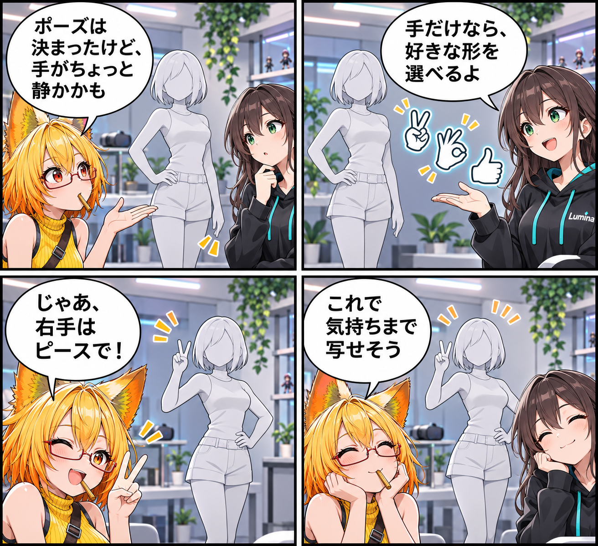

2026.11.19 / Development Log / Feature Spotlight
閑話休題：手のひとことまで、ポーズにする
新規実装の報告ではなく、VRASに既にある指ポーズプリセットを紹介します。全身のポーズを決めたあとに、手の形を選び、写真の意図を指先から補える機能です。
今回は feature-spotlight（機能紹介） です。集計期間は2026-11-18 03:00:00 JSTから2026-11-19 02:59:59 JSTまで、対象はViewerの
main です。集計終了時点のHEADは c33733a41be121b814a1732df8c9eae089ace2ea、期間内コミットは0件でした。Assets/Scenes/MainScene.unity の未コミット差分は、期間内に実装された事実を確定できないため実績には含めていません。
手の形が、写真の意味を少し変える
VRASの指ポーズプリセットには、ピース、OK、グー、チョキ、パー、指さし、サムズアップ、リラックス、やわらかく開く・握る、ピンチなどが用意されています。全身のポーズを変えずに、選んだ手だけへ適用できます。
左右を選び、最後に整える
Desktopのポーズ画面では各プリセットを左手・右手ごとに適用できます。VRでは、対応する手元へUSE＋トリガーで触れることで、用意された指ポーズを順に切り替える操作もあります。手の表情を決めるために全身を作り直さず、撮影の最後に少しだけ整えるための仕組みです。
アバターの構成を見ながら
指ポーズはHumanoidのFinger Muscleを使えるアバターではその経路を優先し、それが使えない場合はVRASの共通リグ経路を使います。取り込んだアバターの指ボーン構成によって適用できる範囲は変わるため、すべてのモデルで同じ見た目になることを保証するものではありません。
今回の紹介範囲
これは現行実装の紹介です。当日に新しく実装・検証完了したことを示すものではありません。
4コマの話
ろひは撮影の構図を決めたのに、手だけが少し物足りないと気づきます。ルミナが指ポーズをいくつか見せ、ろひはピースを選択。最後は、手のひとことまで決まった一枚に二人で頷きます。
まとめ
VRASの指ポーズプリセットは、全身のポーズを保ったまま、左右それぞれの手へ選んだ形を加える既存機能です。撮影の仕上げで、アバターの気持ちを指先から補えます。